# WHERE WE ARE ---------------------------------------------------------------------------------------------
# Pipeline (T1), three families (T2-T4), tuning (T5). From here on the model is fixed: the tuned XGBoost from T5
# (loaded below from outputs/, with a fallback so this page also stands alone). NEW TODAY: judging it the way a
# clinician needs - confusion matrix at the real prevalence, ROC vs PR, calibration, choosing a threshold on
# purpose, class imbalance - and explaining it (importance, partial dependence, SHAP).
source("R/prep_nhms.R")
library(probably) # calibration, thresholds
library(themis) # class-imbalance recipe steps
library(DALEXtra) # model-agnostic explanations for tidymodels
library(shapviz) # SHAP plots
library(patchwork)
library(future)
plan(multisession, workers = max(1, parallel::detectCores() - 1))
dir.create("outputs", showWarnings = FALSE)
# the tuned XGBoost from Tutorial 5 (falls back to a fixed sensible version so this page stands alone)
if (file.exists("outputs/t05_xgb_last.rds")) {
xgb_last <- readRDS("outputs/t05_xgb_last.rds")
} else {
xgb_spec <- boost_tree(trees = 500, learn_rate = 0.03, tree_depth = 3, min_n = 20, sample_size = 0.8) |>
set_engine("xgboost") |> set_mode("classification")
set.seed(2026)
xgb_last <- last_fit(workflow(dm_rec, xgb_spec), dm_split, metrics = cls_metrics)
}
xgb_fit <- extract_workflow(xgb_last) # fitted workflow (recipe + model)
xgb_final_wf <- workflow(dm_rec, extract_spec_parsnip(xgb_fit)) # same spec, unfitted, for resampling
test_preds <- collect_predictions(xgb_last) # predictions on the locked test set
# out-of-fold predictions on the TRAINING set: every DECISION (threshold, calibration) is made on these,
# so the test set stays an honest final exam
set.seed(2026)
xgb_cv <- fit_resamples(xgb_final_wf, dm_folds, metrics = cls_metrics, control = control_resamples(save_pred = TRUE))
cv_preds <- collect_predictions(xgb_cv)Tutorial 6 · Evaluation, calibration and explanation
Session 7 · Day 2, 11.50–13.00 · Slides 07
0 · Start
1 · A model is a probability; a decision is a threshold
test_preds |> select(undx_dm, .pred_Yes, .pred_class) |> head()Every classifier we built outputs P(Yes); .pred_class is just P(Yes) ≥ 0.5. The 0.5 is a software default that silently assumes a false positive and a false negative cost the same. In screening they never do. So we evaluate the probabilities (discrimination, calibration) and the decision (confusion matrix at the threshold we will actually use) — separately.
2 · The confusion matrix at the default threshold — and why it misleads
test_preds |> conf_mat(undx_dm, .pred_class) |> autoplot(type = "heatmap")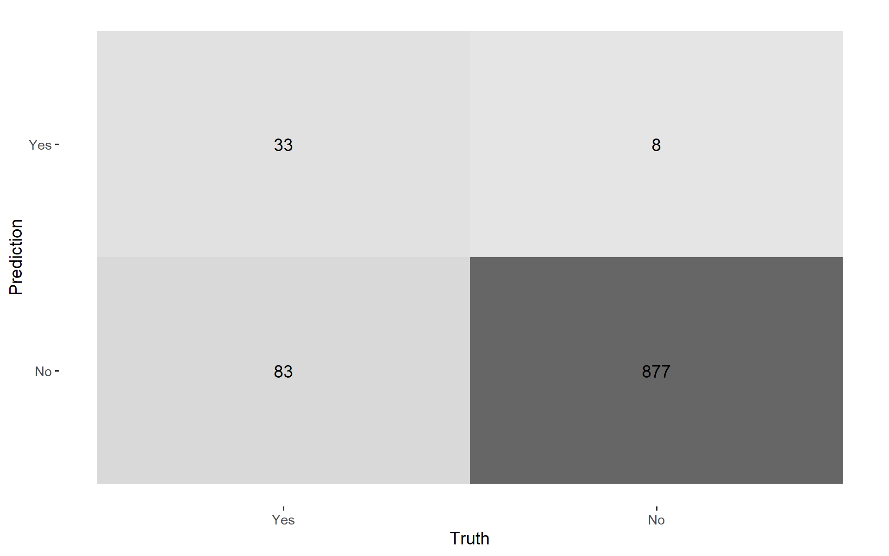
test_preds |> conf_mat(undx_dm, .pred_class) |> summary() |>
filter(.metric %in% c("accuracy", "sens", "spec", "ppv", "npv", "j_index"))Accuracy near 0.89 looks fine and is worthless: 88 % of people are No. Sensitivity at 0.5 is poor. Nobody told the model that missing a diabetic costs more than an extra blood test.
| Metric | Also called | Asks |
|---|---|---|
| sensitivity | recall, TPR | of the people who have it, how many did we flag? |
| specificity | TNR | of the people who don’t, how many did we leave alone? |
| PPV | precision | of the people we flagged, how many have it? |
| NPV | — | of the people we cleared, how many are truly clear? |
| J (Youden) | — | sens + spec − 1 |
PPV is not a property of the model
ppv_at <- function(sens, spec, prev) (sens * prev) / (sens * prev + (1 - spec) * (1 - prev))
tibble(prevalence = c(0.02, 0.05, 0.116, 0.25)) |> mutate(ppv = ppv_at(sens = 0.80, spec = 0.75, prev = prevalence))Same sensitivity and specificity, four populations, four PPVs. A model validated in a clinic (25 %) and deployed at a pasar malam (4 %) will see its PPV collapse. Report the prevalence you validated at — TRIPOD+AI asks for exactly this.
3 · Threshold-free: ROC, precision–recall, gain
roc_auc(test_preds, undx_dm, .pred_Yes); pr_auc(test_preds, undx_dm, .pred_Yes)p_roc <- roc_curve(test_preds, undx_dm, .pred_Yes) |> autoplot() + labs(title = "ROC")
p_pr <- pr_curve(test_preds, undx_dm, .pred_Yes) |> autoplot() + labs(title = "Precision-recall (baseline = 0.116)")
p_gain <- gain_curve(test_preds, undx_dm, .pred_Yes) |> autoplot() + labs(title = "Gain: screen the top x%, find y% of cases")
p_roc + p_pr + p_gain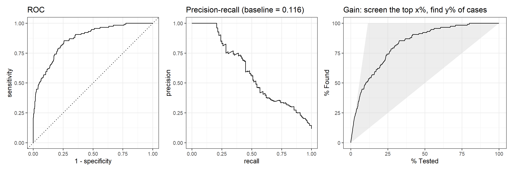
- ROC is prevalence-blind — good for comparing models across populations, flattering on rare outcomes.
- Precision–recall shows what the positive predictions are worth; its baseline is the prevalence.
- Gain is the one for a programme manager: “if we can only test 20 % of adults, which 20 %, and what share of cases do we catch?”
4 · Calibration: do the probabilities mean what they say?
brier_class(test_preds, undx_dm, .pred_Yes) # 0 = perfect; predicting the prevalence for everyone gives ~0.10cal_plot_breaks(test_preds, truth = undx_dm, estimate = .pred_Yes, num_breaks = 10) + labs(title = "Reliability diagram, test set")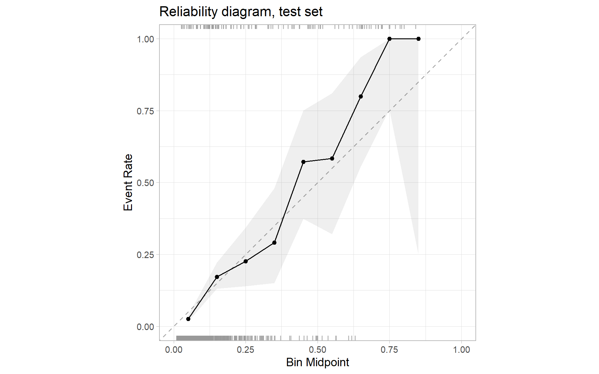
cal_plot_windowed(test_preds, truth = undx_dm, estimate = .pred_Yes) + labs(title = "Windowed calibration, test set")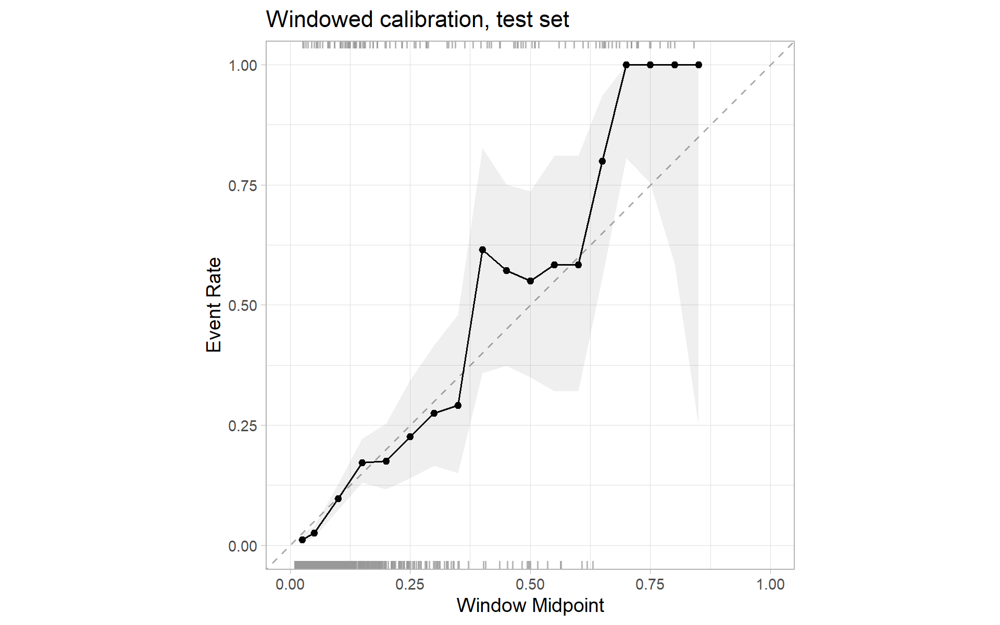
A point at (0.40, 0.25) means: when the model says 40 %, only 25 % actually have it. A model can have AUC 0.86 and still be badly calibrated — boosted trees and forests routinely are, and SMOTE’d models always are. A probability a clinician will show to a patient must be calibrated; a score that only sorts a queue cares less.
Fix it honestly: estimate on CV predictions, validate within resamples
cal_val <- cal_validate_logistic(xgb_cv, smooth = FALSE, metrics = metric_set(brier_class, roc_auc), save_pred = TRUE) # smooth = FALSE -> Platt (2 parameters)
collect_metrics(cal_val) # uncalibrated vs calibrated: Brier down, AUC unchangedcollect_predictions(cal_val) |>
cal_plot_breaks(truth = undx_dm, estimate = .pred_Yes, .by = .type) + labs(title = "Before vs after logistic recalibration (CV)")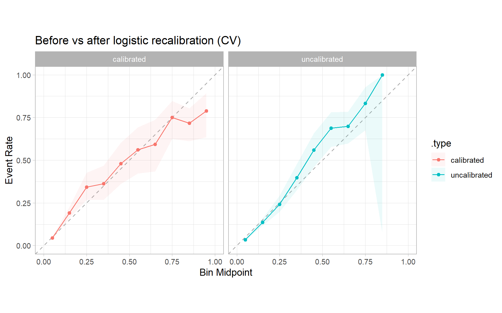
calibrator <- cal_estimate_logistic(cv_preds, truth = undx_dm, smooth = FALSE) # fitted on out-of-fold predictions
test_preds_cal <- cal_apply(test_preds, calibrator) # applied to the test set
bind_rows(raw = brier_class(test_preds, undx_dm, .pred_Yes), calibrated = brier_class(test_preds_cal, undx_dm, .pred_Yes), .id = "probs")Recalibration moves the probabilities, not the ranking: AUC is untouched, Brier improves, thresholds become meaningful. Platt/logistic (smooth = FALSE: two parameters, robust) for most cases; probably’s default (smooth = TRUE) fits a spline-based GAM and is more flexible; isotonic when you have lots of data and a strange shape.
5 · Choosing a threshold on purpose
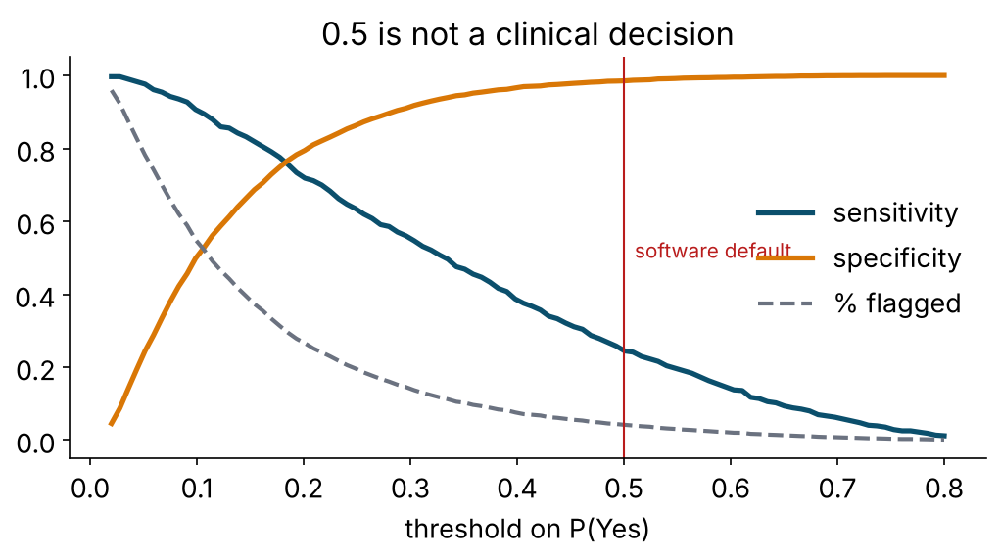
thr_cv <- threshold_perf(cv_preds, undx_dm, .pred_Yes, thresholds = seq(0.02, 0.60, by = 0.01))
thr_cv |>
filter(.metric %in% c("sensitivity", "specificity", "j_index")) |>
ggplot(aes(.threshold, .estimate, colour = .metric)) +
geom_line(linewidth = 1) + geom_vline(xintercept = 0.5, linetype = 2) +
labs(title = "Sensitivity / specificity by threshold (CV predictions)", x = "threshold on P(Yes)", y = NULL) +
theme_minimal()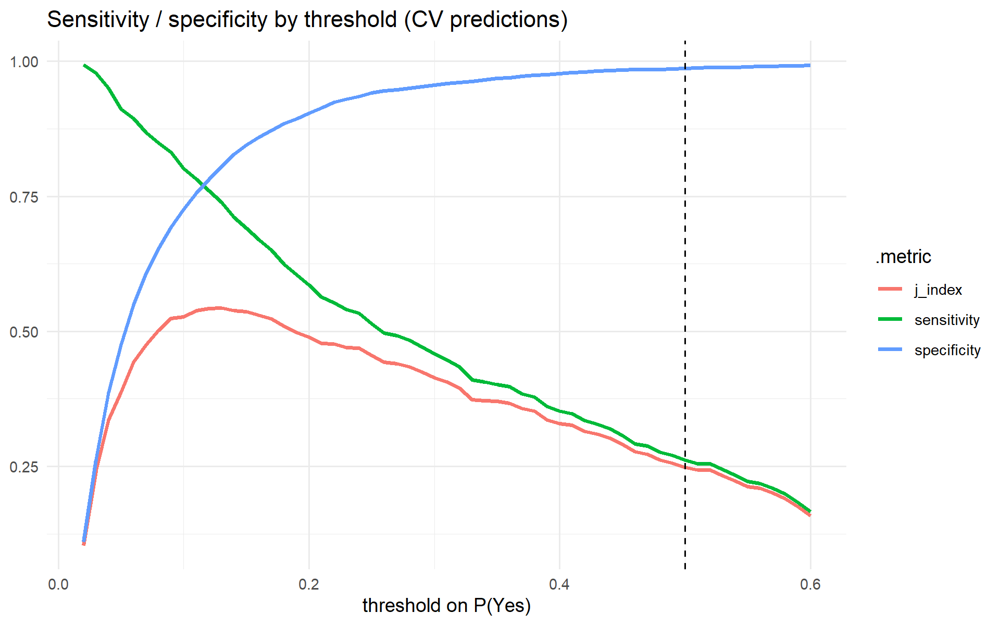
A community screen wants sensitivity around 0.80 and accepts the extra blood tests. Find the threshold on the CV predictions, then report it on the test set:
thr_chosen <- thr_cv |> filter(.metric == "sensitivity", .estimate >= 0.80) |> slice_max(.threshold, n = 1) |> pull(.threshold)
thr_chosen[1] 0.1test_thr <- test_preds |>
mutate(.pred_screen = make_two_class_pred(.pred_Yes, levels = levels(undx_dm), threshold = thr_chosen) |> as.factor())
test_thr |> conf_mat(undx_dm, .pred_screen) |> summary() |> filter(.metric %in% c("sens", "spec", "ppv", "npv"))test_thr |> summarise(flagged_pct = mean(.pred_screen == "Yes"),
cases_found = sum(.pred_screen == "Yes" & undx_dm == "Yes") / sum(undx_dm == "Yes"),
number_needed_to_screen = 1 / mean(undx_dm[.pred_screen == "Yes"] == "Yes"))“Test the X % the model flags and you find Y % of the undiagnosed cases; about Z people tested per case found.” That is a sentence a programme manager can act on.
Decision curve analysis (the clinician’s metric)
if (requireNamespace("dcurves", quietly = TRUE)) {
dcurves::dca(undx_dm ~ .pred_Yes, data = test_preds |> mutate(undx_dm = undx_dm == "Yes"),
thresholds = seq(0.02, 0.5, by = 0.01), label = list(.pred_Yes = "XGBoost")) |> plot(smooth = TRUE)
}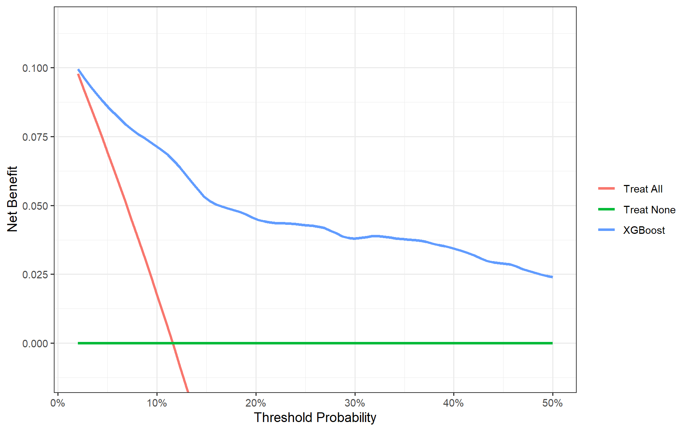
Net benefit at threshold t = (TP − FP × t/(1−t)) / n: the threshold is the exchange rate between a false and a true positive. A model is useful only where its curve sits above both “test everyone” and “test no one”.
6 · Class imbalance: the honest version
lr_spec <- logistic_reg() |> set_engine("glm")
rec_smote <- dm_rec |> step_smote(undx_dm, over_ratio = 1) # only applied to training data (skip = TRUE)
rec_down <- dm_rec |> step_downsample(undx_dm, under_ratio = 1)
set.seed(2026)
imbalance_res <- workflow_set(preproc = list(base = dm_rec, smote = rec_smote, downsample = rec_down),
models = list(logistic = lr_spec)) |>
workflow_map("fit_resamples", resamples = dm_folds, metrics = cls_metrics, seed = 2026)
collect_metrics(imbalance_res) |>
filter(.metric %in% c("roc_auc", "brier_class", "sensitivity", "specificity")) |>
select(wflow_id, .metric, mean) |>
pivot_wider(names_from = .metric, values_from = mean)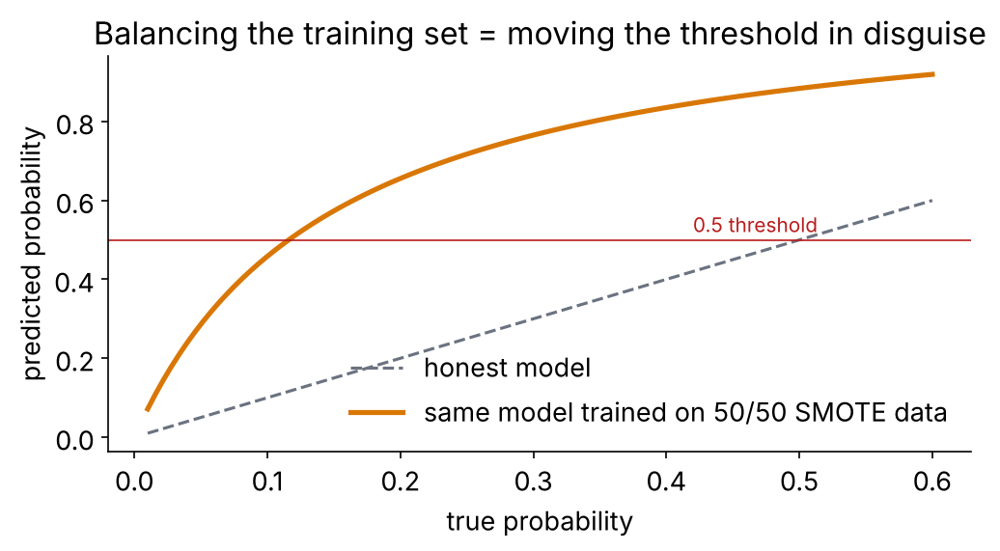
Balancing the training set pushes sensitivity-at-0.5 up — and AUC does not move while the Brier score gets worse, because every probability now thinks prevalence is 50 %. You got the same sensitivity in §5 by moving the threshold, without breaking calibration. SMOTE is a last resort; if you use it, recalibrate afterwards.
7 · Explaining the model: global
xgboost::xgb.importance(model = extract_fit_engine(xgb_fit)) |> # Gain = share of the total loss reduction attributed to each column
as_tibble() |>
slice_max(Gain, n = 15) |>
ggplot(aes(Gain, reorder(Feature, Gain))) +
geom_col(fill = "#0b4f6c") +
labs(x = "gain (share of total loss reduction)", y = NULL, title = "XGBoost gain importance (model-specific)") +
theme_minimal()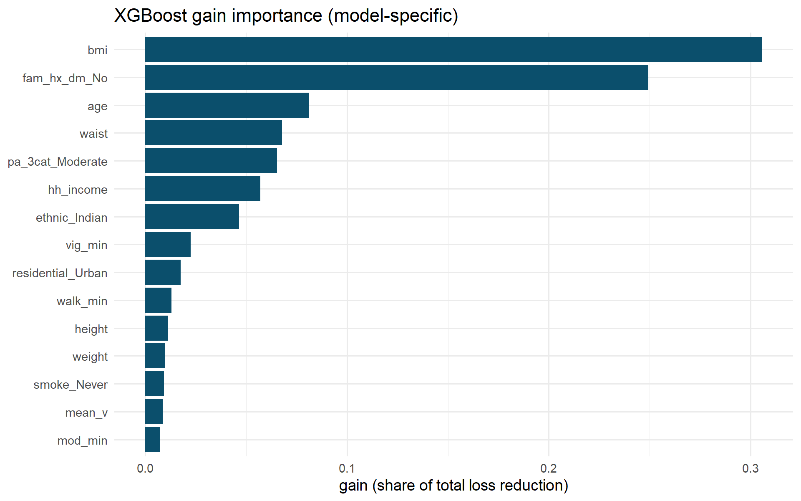
Model-agnostic tools work for anything with a predict() — including this afternoon’s network:
explainer <- explain_tidymodels(
xgb_fit,
data = dm_train |> select(-undx_dm),
y = dm_train$undx_dm == "Yes",
predict_function_target_column = "Yes", # our event level; DALEX would otherwise take the 2nd column
label = "XGBoost (tuned)", verbose = FALSE
)
set.seed(2026)
vi_perm <- model_parts(explainer, loss_function = DALEX::loss_one_minus_auc, B = 10, N = 1000)
plot(vi_perm, max_vars = 15) + labs(title = "Permutation importance: AUC lost when a column is shuffled")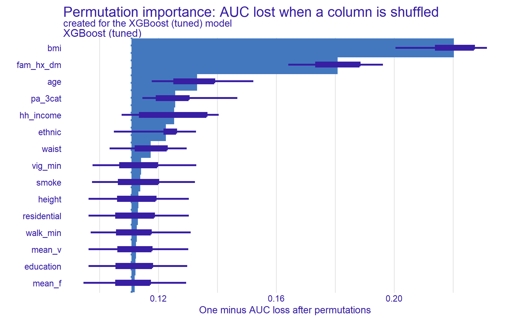
Correlated predictors share credit (BMI, waist, weight, bmi_cat each look weaker than “adiposity” is).
pdp <- model_profile(explainer, variables = c("age", "bmi", "waist"), N = 500)
plot(pdp) + labs(title = "Partial dependence: average predicted P(Yes) as one variable moves")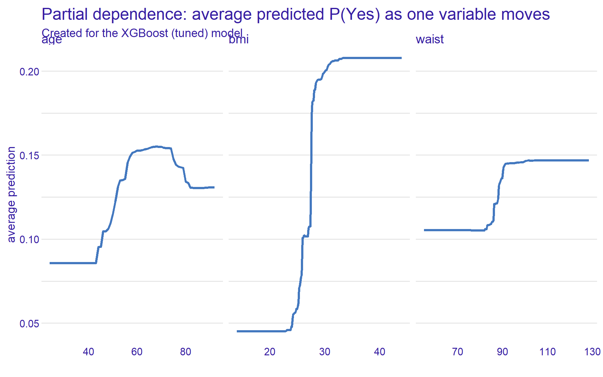
pdp_sex <- model_profile(explainer, variables = "waist", groups = "sex", N = 500)
plot(pdp_sex) + labs(title = "Waist by sex: two different cut-offs")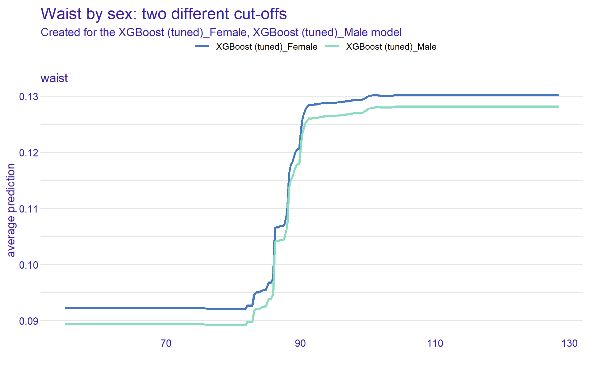
Look for the structure the trees found: the BMI step near 27.5, the age plateau, two waist curves for two sexes. The last one is an interaction a logistic model never saw unless someone hand-coded sex-specific cut-offs.
8 · Explaining the model: local (SHAP)
Note
A Shapley value (game theory, 1953) is a variable’s fair share of the difference between this person’s prediction and the average prediction, averaged over every order in which the variables could be “added”. The shares add up exactly to the prediction. Two ways to get them: TreeSHAP reads them exactly off a tree ensemble in well under a second (what we do here); KernelSHAP estimates them for any model from predictions alone (Tutorial 7 uses it on the neural network — same plots, slower estimator).
One mechanical point first. The model never saw sex or ethnic; it saw the baked matrix the recipe produced — imputed, dummy-coded, normalised. SHAP values therefore come out per dummy column (sex_Male, ethnic_Chinese, …). shapviz can add the pieces of each factor back together (collapse) so you read one value per original variable, and plot it against the original, un-normalised values (X).
# 1. the people to explain, and the matrix the model actually saw for them
set.seed(2026)
X_explain <- dm_train |> select(-undx_dm) |> slice_sample(n = 500) # 500 people is plenty for the plots
rec_fit <- extract_recipe(xgb_fit) # the recipe as TRAINED inside the workflow
X_baked <- bake(rec_fit, new_data = X_explain, all_predictors(), composition = "matrix")
# 2. which dummy columns came from which factor (recipes keeps the book) -> one SHAP value per original variable
dummy_step <- tidy(rec_fit) |> filter(type == "dummy") |> pull(number)
facs <- tidy(rec_fit, number = dummy_step) |> pull(terms) |> unique() # the original factor columns
# each factor -> the dummy columns it produced. bake() cleans the level names (25-29.9 -> X25.29.9), so match on
# the "<factor>_" prefix of the ACTUAL baked columns rather than on the raw level names.
collapse <- setNames(lapply(facs, \(f) grep(paste0("^", f, "_"), colnames(X_baked), value = TRUE)), facs)
collapse <- collapse[lengths(collapse) > 0]
# 3. TreeSHAP: exact Shapley values straight from the fitted trees
sv <- shapviz(extract_fit_engine(xgb_fit), X_pred = X_baked, X = X_explain, collapse = collapse)
sv_importance(sv, kind = "beeswarm", max_display = 15) + labs(title = "SHAP summary: each dot is one person")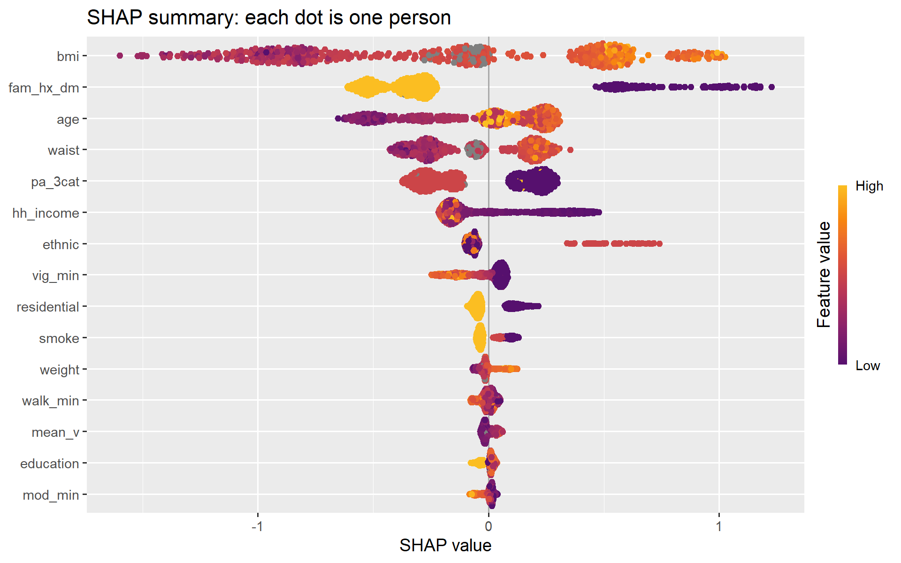
sv_dependence(sv, v = "bmi", color_var = "fam_hx_dm") + labs(title = "BMI, coloured by family history")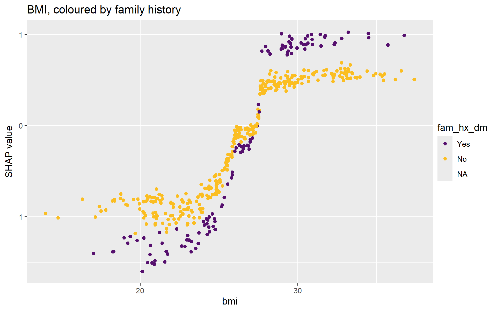
sv_dependence(sv, v = "waist", color_var = "sex") + labs(title = "Waist, coloured by sex")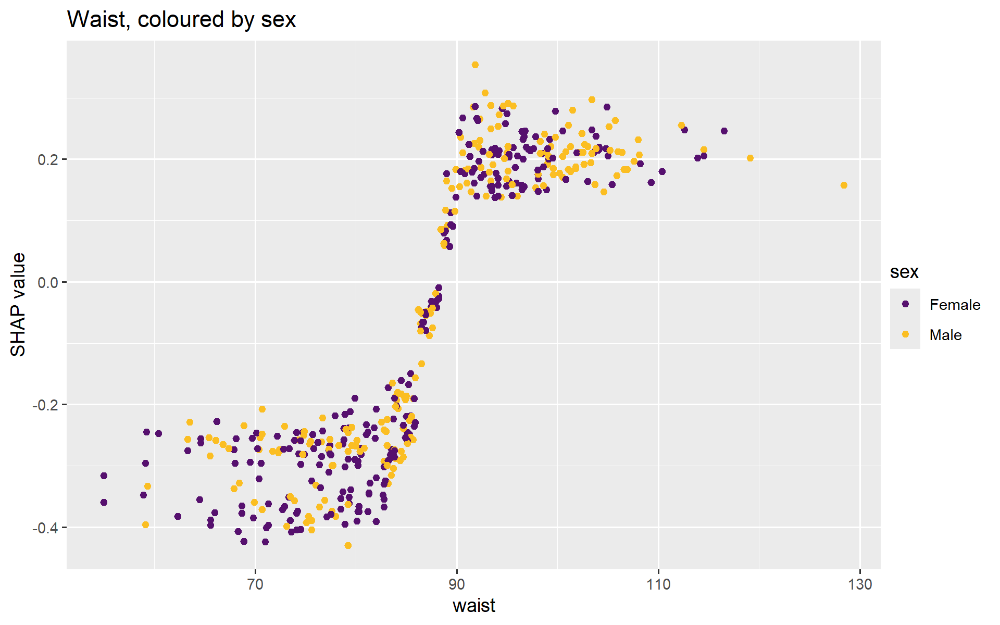
One patient:
X_explain[1, c("age", "sex", "bmi", "waist", "fam_hx_dm", "ethnic")]sv_waterfall(sv, row_id = 1) + labs(title = "Why this person scored what they scored")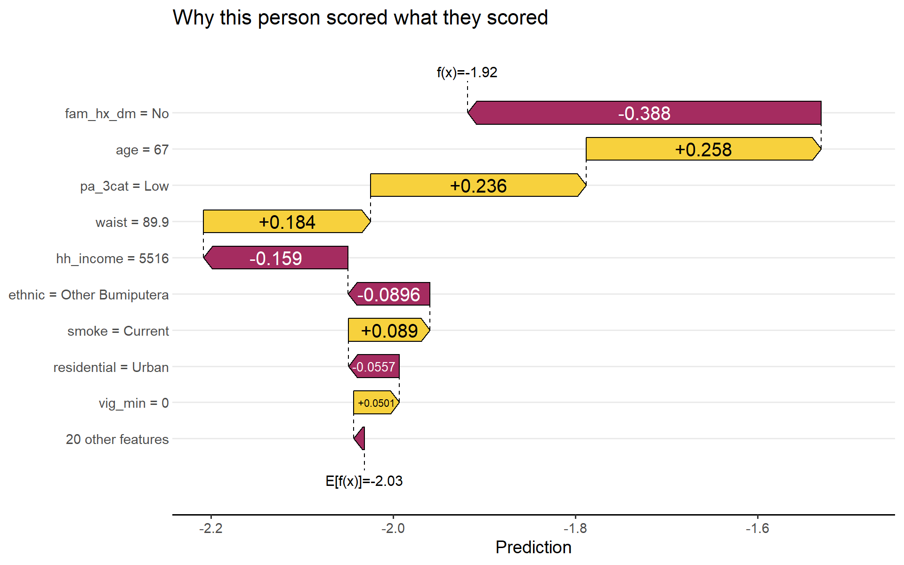
predict_parts(explainer, new_observation = X_explain[1, ], type = "break_down") |> plot()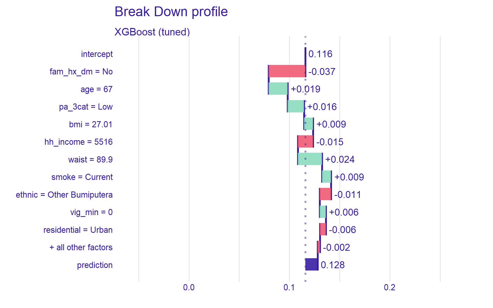
What explanations do not mean
- Not causal. SHAP and PDP describe the fitted function. “BMI drives risk up after 27.5” is a statement about the model, not about biology.
- Not unique. Correlated predictors swap credit between fits; check stability across resamples before you tell a story.
- Not a safety certificate. Use explanations to audit: agreement with what you know → trust up; disagreement → either you learned something or the model is cheating. Find out which.
saveRDS(list(thr = thr_chosen, calibrator = calibrator), "outputs/t06_decisions.rds")Your turn (10 min)
Solution A
thr <- threshold_perf(cv_preds, undx_dm, .pred_Yes, thresholds = seq(0.02, 0.80, by = 0.01))
thr_screen <- thr |> filter(.metric == "sensitivity", .estimate >= 0.85) |> slice_max(.threshold) |> pull(.threshold)
thr_confirm <- thr |> filter(.metric == "specificity", .estimate >= 0.90) |> slice_min(.threshold) |> pull(.threshold)
report_at <- function(preds, threshold) {
preds |>
mutate(.pred_rule = make_two_class_pred(.pred_Yes, levels = levels(undx_dm), threshold = threshold) |> as.factor()) |>
summarise(threshold = threshold,
flagged_pct = mean(.pred_rule == "Yes"),
sens = sum(.pred_rule == "Yes" & undx_dm == "Yes") / sum(undx_dm == "Yes"),
spec = sum(.pred_rule == "No" & undx_dm == "No") / sum(undx_dm == "No"),
ppv = sum(.pred_rule == "Yes" & undx_dm == "Yes") / sum(.pred_rule == "Yes"),
nns = 1 / ppv)
}
bind_rows(screen = report_at(test_preds, thr_screen), confirm = report_at(test_preds, thr_confirm), .id = "use_case")ppv_at(0.85, 0.65, 0.116); ppv_at(0.85, 0.65, 0.06)[1] 0.2416667[1] 0.1342105A model sentence: “Testing the ~40 % of adults the model flags would find ~85 % of undiagnosed cases; about four people tested per case found.” A2: sensitivity and specificity are (roughly) properties of model + threshold and stay put; PPV falls (fewer true cases among the flagged), NPV rises, number-needed-to-screen rises; the flagged percentage also shifts because the score distribution changes with the population.
Solution B
by_group <- test_preds |>
bind_cols(dm_test |> select(sex, ethnic)) |> # last_fit predictions are in test-set row order
mutate(.pred_screen = make_two_class_pred(.pred_Yes, levels = levels(undx_dm), threshold = thr_chosen) |> as.factor())
by_group |> group_by(sex) |> roc_auc(undx_dm, .pred_Yes)by_group |> group_by(ethnic) |> roc_auc(undx_dm, .pred_Yes)by_group |> group_by(sex) |> sensitivity(undx_dm, .pred_screen)Small groups (Others, Other Bumiputera) have wide uncertainty; look at the SE before reading a difference. If one group is genuinely under-flagged at the shared threshold, options are group-specific thresholds, re-weighting, more data — and, always, saying so in the paper. fairmodels extends DALEX with the standard fairness metrics.
What to remember
- Accuracy lies at 12 % prevalence. Report sens/spec/PPV/NPV at the threshold you will use, at the prevalence you face.
- ROC to compare models; PR and gain for what the predictions are worth; Brier and a calibration plot for honesty.
- Choose the threshold from the use case, on CV predictions; report it on the test set, in people.
- SMOTE moves the threshold in disguise and breaks calibration. Move the threshold instead.
- Importance → which; PDP → how; SHAP → why this person. None of it is causal.
Next (14.00): Tutorial 7 — neural networks.